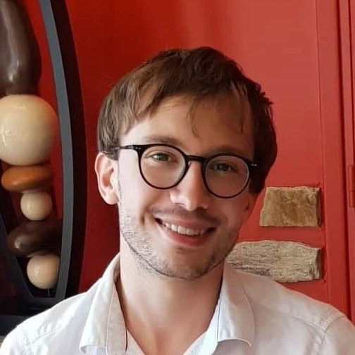

Antoine Commaret

I am currently a Postdoc at INRIA Sophia-Antipolis in the ABS team.
I used to be (2021-2024) a PhD student at the Université Côte d'Azur
under the supervision of David Cohen-Steiner and Indira Chatterji.
E-mail adress: surname.name [at] inria.fr
Adress: Centre INRIA d'Université Côte d'Azur, Byron building, Bureau Y310.
Research topics
Bridging pure and applied mathematics, I am interested in the geometry of singular objects (in particular, curvatures and stratifications). To investigate these questions, I use a variety of mathematical tools:- Persistent homology A method for studying the persistence of topological features of a space along a filtration, that is, the time at which a homology class appears during the filtration and the time at which it disappears.
- Nonsmooth analysis, Clarke gradient An extension of the classical notion of gradient that makes it possible to study the local behaviour of non-differentiable (and not necessarily convex) functions, provided they are locally Lipschitz.
- Geometric measure theory (in particular, through integral currents)
A branch of mathematics that studies the geometric properties of subsets of Euclidean spaces using tools from measure theory.
Integral currents are mathematical objects that can represent integration over submanifolds, including those with singularities. - Integral geometry The study of geometric properties of subsets of a metric space that are invariant under the action of a group (often the isometry group). It leads to Crofton formulas and principal kinematic formulas.
- O-minimal structures
Collections of subsets of Euclidean spaces satisfying a few simple axioms that guarantee well-behaved geometric properties (e.g. triangulability).
Semialgebraic and subanalytic sets are two examples of sets definable in o-minimal structures.
Some research questions
- How can we robustly estimate the geometry underlying a point cloud that is close to a stratified set?
- How can generalized gradients be used in pure mathematics? In practice, can they improve function minimization procedures in semialgebraic In at least one setting, the answer is yes. See the optimization section of the paper Modeling high dimensional point clouds with the spherical cluster model or even o-minimal settings?
-
What are the minimal regularity assumptions ensuring the existence of normal cycles
A current generalizing the unit normal bundle of C² submanifolds.
It describes the curvatures of a subset of a Euclidean space or a Riemannian manifold in the most general possible setting (as characterized by Fu's uniqueness theorem).? - What are the minimal regularity assumptions ensuring the validity of concepts from integral geometry (in particular, which objects still satisfy the principal kinematic formula)? This is Joseph Fu's conjecture There exists a maximal class of objects admitting a normal cycle and satisfying the principal kinematic formula. in integral geometry.
- To which spaces can the two preceding questions be generalized? This is partly the question addressed by Alesker's theory of valuations. The study of the dual space of additive, continuous functionals invariant under the action of certain groups.
Collaborators
I am fortunate to collaborate, or to have collaborated, with the following researchers:David Cohen-Steiner - Frédéric Cazals - Indira Chatterji - Vadim Lebovici - Jonas Knoerr - Jacopo Ulivetti